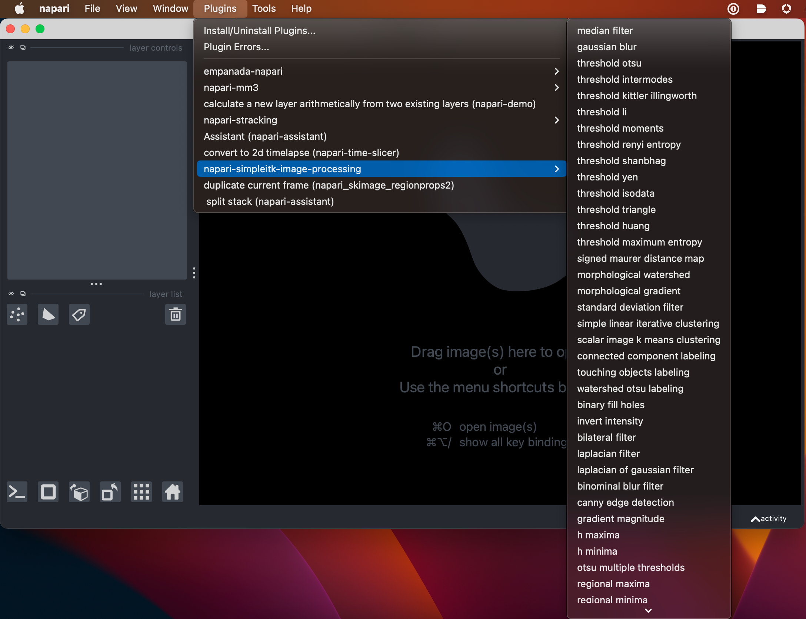
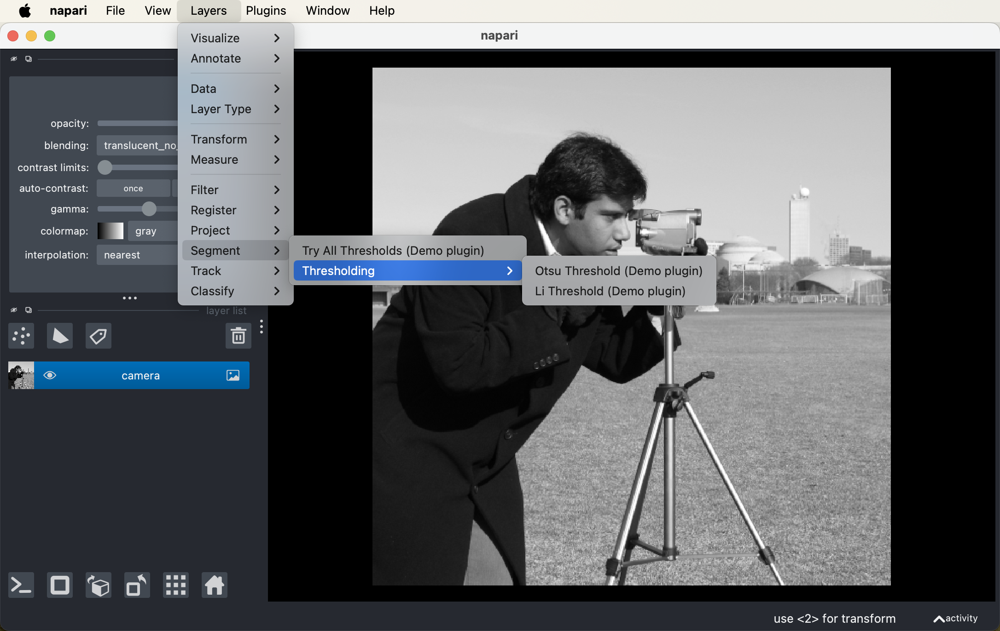

NAP-6 — Contributable Menus#
- Author:
Draga Doncila Pop <ddoncila@gmail.com>
- Created:
2022-12-02
- Resolution:
TBD
- Resolved:
TBD
- Status:
Provisional
- Type:
Standards Track
- Version effective:
TBD
Important
This NAP is partially implemented! Not all features discussed within this NAP have been implemented. Notably:
Plugin Submenus
Item Descriptions
Item Grouping & Ordering
For a more complete list of what’s left to do, see GitHub Issue #7012.
Abstract#
Since the initial release of npe2 infrastructure has been in place for
plugin developers to declare menu contributions. These contributions
add new items to menus in napari that have been deemed contributable.
The machinery for allowing plugins to contribute to menus has been largely in place for a while, but much discussion has occurred on the list of menus we wish to open up for contribution and the guiding principles behind the organization of this list.
This NAP defines an overall structure for contributable menus, an initial list of contributable menus that are to be opened up for plugin developers, and a process for users and plugin developers to propose new contributable menus to be added to the existing list.
Motivation and Scope#
Currently plugin developers can provide processing and analysis extensions
strictly through dock widget contributions. These are exposed to the user
under the Plugins menu, either directly at the top level if a plugin only
provides a single widget, or in a submenu labelled with the plugin’s display
name when a plugin provides multiple widgets.
This Plugins menu quickly becomes difficult to parse with increasing number
of plugins installed in an environment, and does not provide sufficient
structure for a user to be able to quickly and coherently navigate through the
extensions available to them.

The vast majority of plugins (217 out of 263) available today provide at least
one widget contribution. Of these, 140 provide just a single widget 19
provide more than five widgets and 9 provide more than 10. This means that
while it is important to provide structure within an individual plugin’s
widgets, we must also provide cross-plugin structure so that users with many
plugins installed can find widgets by the action they want to perform, rather
than by hunting across endless plugin submenus, or attempting to discern what a
plugin’s widget might do from its title.
Without meaningful places to put their contributions, plugin developers are coming up with their own way to organize contributions, whether through numbering widgets in their menu, mangling names to achieve a certain order, or coming up with their own unsupported solutions for adding new menu items.
The goal of this NAP, therefore, is to provide a structured set of contributable menus that is easy to navigate, semantically organized and intuitive for both users and plugin developers.
Note
It is highly likely that with growing numbers of plugins, widgets and menus, menu navigation itself becomes more burdensome when hunting for a specific action. Searchability of menu items is not within scope for this NAP, but will be made available to users via a command palette.
What is a Menu Contribution?#
A MenuItem contribution in the
npe2 manifest
adds a new item to one of the napari menus (defined by an ID). When this item
is clicked, the associated command is executed. Additionally, enablement
clauses can be defined that control when this menu item is available for
clicking and when it is disabled. Similarly, a when clause can be used to
control whether the menu item is visible in the menu at all.
In addition to the menu items themselves, Submenu contributions can also be
defined, which add a new submenu to a contributable menu which can be populated
with new MenuItem contributions.
The following example napari.yaml file demonstrates menu contributions as
proposed in this NAP:
name: napari-demo
display_name: Demo plugin
contributions:
commands:
- id: napari-demo.all_thresholds
title: Try All Thresholds
python_name: napari_demo:all_thresholds
- id: napari-demo.threshold_otsu
title: Otsu Threshold
python_name: napari_demo:threshold_otsu
- id: napari-demo.threshold_li
title: Li Threshold
python_name: napari_demo:threshold_li
menus:
napari/layers/segment:
- submenu: threshold
- command: napari-demo.all_thresholds
threshold:
- command: napari-demo.threshold_otsu
- command: napari-demo.threshold_li
submenus:
- id: threshold
label: Thresholding
This NAP proposes new menu IDs and new top level menus to open for contribution.

What do Menu Contributions do?#
MenuItem contributions can be thought of as auxiliary contributions that
allow you to place an existing contribution into one of napari’s menus.
Currently only widget contributions and pure commands could be placed in
menus, as the other contribution types (reader, writer, sample data) already
have defined locations and dispatch mechanisms.
When widget contributions are placed in a menu, clicking on that menu item
will simply open the associated widget. However, pure commands can take as
input napari objects like specific layers, or the Viewer, and produce
output the Viewer uses - currently this would be new layers. For example, you
could have a command that creates a new layer with specific features, or one
that edits the rendering properties of an existing layer.
Moving forward, new contribution types could be defined that allow
plugin developers to run context aware commands that interact with
different Viewer components without the need for a widget, and with
more specific effects than current pure commands.
For example, LayerEditor contributions could take the currently
active/selected Layers and edit the underlying data, while LayerGenerator
contributions could take the same input and create new layers in
the viewer. By providing dedicated contributions for such actions,
napari can enforce rules about layer editing and layer
generation more strictly than for widget contributions,
which, if taking the Viewer, can perform arbitrary actions upon
all objects within the Viewer.
We therefore propose a menu structure that would be easily extensible with these new contribution types and provide intuitive locations for both plugin developers to add their functionality, and users to find it.
Detailed Description#
We propose an initial set of contributable menus organized by the napari object being acted upon by the actions within the menu, and the likely output of those actions.
The Layers Menu#
Currently the foremost example of such an object is the napari Layers, and
this top level menu therefore contains a number of submenus organized by the
types of processing the user may wish to perform on the selected Layer or
Layers.
The Layers submenus are organized to give the user an immediate
feeling of what might happen to their Layers as a result of clicking
one of these menu items. Note that the top level menu Layers itself is
not contributable. Only its submenus are.
Visualize- Items in this submenu allow you to change visualization parameters from selected layer or layers. They do not change the layer data, but will change how it’s displayed. An example would be a widget that allows you to select which subset of points is visible based on feature properties, or one that automatically sets the contrast limits based on properties of the data.Annotate- This submenu provides a location for convenient layer editing tools e.g.Labelssplit/merge actions.Data- This submenu provides utilities for converting your underlying data to a new format e.g. zarr to numpy array, or for changing its data type.Layer Type- This submenu provides utilities for converting layers into layers of different types e.g. image to labels.Transform- Items in this submenu will edit your layer’s metadata and affect the way its data is displayed e.g. an affine transform.Measure- Items in this submenu provide utilities for summarising information about your layer’s data. An example would be a widget that plots the change in the intensity of a clicked pixel over time.Filter- The items in this submenu allow you to apply filters to your actions e.g. a gaussian filter or a denoising filter.Register- Commands that allow the user to perform image registration on one or more layersProject- Commands that generate various projections based on one or more layersSegment- Commands that generate instance segmentations e.g. watershed, SLIC, thresholdTrack- Commands that take in an image or segmentation and produce timelapse tracksClassify- Commands that predict classes/categories for pixels, objects, points, etc.
Many of the actions in this menu exist in the right click layer context menu.
These items should be replicated in the Layers menu as needed, both to aid
discoverability and to ensure users are not met with empty menus on initially
opening napari. It’s also possible that exceedingly common operations e.g.
thresholds, are provided in the future by napari itself.
New File Submenus#
These submenus will be placed in the File top-level menu.
Acquire#
Acquire will contain widgets and utilities for interfacing with microscopes
and other types of cameras.
I/O Utilities#
A cursory analysis of widget names revealed a minimum of 17 plugins provide widgets dedicated to importing and exporting of data, features, models and/or other material supporting analysis.
These widgets usually require more choices from the user than are currently
possible via the reader and writer interfaces. Although many discussions
have been raised about expanding the opening and saving options in napari to
support more complex choices
(#1637,
#2801,
#4611,
#4882…),
we are not presently close to providing a unified interface for complex file
opening/saving. Additionally, default napari opening and saving is entirely
focused on reading data into layer, but there are many other reasons a user may
wish to read a file or save some output from the Viewer.
It is likely, therefore, that some plugins will always have bespoke interfaces
for importing and exporting various file formats. These interfaces will be
exposed via the new File->I/O Utilities menu.
New Layer#
This menu will contain built-in napari commands for creating new empty layers
(similar to the ‘new layer’ buttons atop the layerlist), but also allow plugins
to declare commands that open new empty layers with specific properties e.g. a
zarr-backed Labels layer, an Image layer with a specific dtype, or a
Points layer with specific default features.
Plugin Submenus#
The goal of the newly proposed menus is to provide a natural place where
generally applicable actions can be semantically organized and easy to locate.
However, many napari plugins contain an assortment of highly specialized
widgets (that often interact with each other) that support highly specific, and
sometimes ordered, workflows and analyses.
It may never make sense for such plugins to distribute their widgets across the
different napari menus, particularly when they are designed to work in
concert on specific data formats or layer types.
We therefore give plugin developers full control over their own submenu under
Plugins->My Plugin. Plugin developers can organize all contributions under
this submenu as they see fit, including adding their own submenus of arbitrary
depth.
All commands offered by a plugin will always be available in the plugin’s submenu, regardless of their presence in other menus. If the plugin defines its own submenus, these will always be first, followed by a separator, then any commands with no dedicated menu entry for the plugin’s own submenu. These will be alphabetically ordered.
To declare a new submenu for itself, a plugin can add a submenu entry whose id
is prefixed with the plugin’s own name. For example, the following manifest
declares one command for the napari/layers/segment submenu, and one for its
own specific-analysis submenu.
name: napari-demo
display_name: Demo plugin
contributions:
commands:
- id: napari-demo.segment_well
title: A command for good segmentation
python_name: napari_demo:segment
- id: napari-demo.specific_command
title: A specific command for this plugin
python_name: napari_demo:specific_command
menus:
napari/layers/segment:
- command: napari-demo.segment_well
napari-demo/specific_submenu:
- command: napari-demo.specific_command
submenus:
- id: napari-demo/specific_submenu
label: A submenu for specific analyses
Complete Set of Proposed Contributable napari Menus#
The full list of contributable menus is below. Note that the top level menu
Layers itself is not contributable. Only its submenus are.
File
├─ ...
├─ New Layer
├─ IO Utilities
├─ Acquire
Layers
├─ Visualize
├─ Annotate
├─ Data
├─ Layer Type
├─ Transform
├─ Measure
├─ Filter
├─ Register
├─ Project
├─ Segment
├─ Track
├─ Classify
As a case study, we take four plugins offering between 9 and 14 widget
contributions and arrange their widgets in these menus: empanada-napari,
napari-stracking, napari-mm3 and napari-clemreg. We have not listed the
Plugins menu for most plugins, as it simply contains all widgets. However, for
empanada-napari, we demo a new submenu, and show the widgets with entries in
other menus at the bottom. Note that we have arranged these widgets purely
based on title and cursory inspection of the documentation, so this should not
be considered a concrete proposal for the structure of these plugins.
File
├─ ...
├─ New Layer
├─ IO Utilities
│ ├─ Export 2D segmentations (empanada-napari)
│ ├─ Store training dataset (empanada-napari)
│ ├─ nd2ToTIFF (napari-mm3)
├─ Acquire
Layers
├─ Visualize
│ ├─ SFilterTrack (napari-stracking)
├─ Annotate
│ ├─ Merge Labels (empanada-napari)
│ ├─ Delete Labels (empanada-napari)
│ ├─ Split Labels (empanada-napari)
│ ├─ Jump to label (empanada-napari)
│ ├─ Find next available label (empanada-napari)
│ ├─ Pick training patches (empanada-napari)
├─ Data
├─ Layer Type
├─ Transform
│ ├─ make_image_warping (napari-clemreg)
├─ Measure
│ ├─ SParticlesProperties (napari-stracking)
│ ├─ STracksFeatures (napari-stracking)
├─ Filter
├─ Register
│ ├─ make_point_cloud_registration (napari-clemreg)
├─ Project
├─ Segment
│ ├─ 2D Inference (empanada-napari)
│ ├─ 3D Inference (empanada-napari)
│ ├─ make_log_segmentation (napari-clemreg)
│ ├─ make_clean_binary_segmentation (napari-clemreg)
│ ├─ SegmentOtsu (napari-mm3)
│ ├─ SegmentUnet (napari-mm3)
│ ├─ Foci (napari-mm3)
│ ├─ SDetectorDog (napari-stracking)
│ ├─ SDetectorDoh (napari-stracking)
│ ├─ SDetectorLog (napari-stracking)
│ ├─ SDetectorSeg (napari-stracking)
├─ Track
│ ├─ SLinkerShortestPath (napari-stracking)
│ ├─ Tracks (napari-mm3)
├─ Classify
├─ make_point_cloud_sampling (napari-clemreg)
Plugins
├─ empanada-napari
│ ├─ Models
| | ├─ Finetune a model
| | ├─ Train a model
| | ├─ Register a model
| | ├─ Get model info
│ ├─ 2D Inference
│ ├─ 3D Inference
│ ├─ Delete Labels
│ ├─ Export 2D segmentations
│ ├─ Find next available label
│ ├─ Jump to label
│ ├─ Merge Labels
│ ├─ Pick training patches
│ ├─ Split Labels
│ ├─ Store training dataset
...
Item Descriptions#
To allow users to browse menus more effectively without having to click each
item to figure out what it does, menu contributions should be given a
description field that is available when the user is inspecting the menu. The
description should be required and displayed in the bottom left hand status
bar of napari, so that users can be confident of what will happen when they
click on an item.
Item Grouping & Ordering#
Previously, plugin contributions were limited to the Plugins menu and grouped
under the plugin’s name. Now that plugin contributions can be colocated with
native napari actions, it’s important that users are able to distinguish
the source of menu items.
To that end, napari items should always be grouped separately to plugin items in all menus, and listed first. Additionally, the plugin’s name should also be listed with each plugin contribution. Since plugin names can be quite long, future work should consider more concise ways to indicate menu item sources, including using icons. If using an icon, the plugin’s display name should be available on hover.
Otherwise, plugin commands will be grouped according to the given order and
group parameters if there are any, or otherwise at the bottom of the given
menu, below a separator, in alphabetical order. Where a group only contains a
single item after all plugin and napari actions have been registered, a
separator will not be added. Otherwise, groups will be separated by a
separator.
Items that Don’t Fit?#
Where a plugin developer feels that none of the submenus of a given menu are
suitable for their purpose, they should add their item to the deepest
applicable menu. Where a plugin developer feels no top level menu or submenu is
suitable for their purpose, they should add their item to their own plugin’s
submenu under Plugins -> Your Plugin, and consider requesting a new
contributable menu via the process described below.
The top level menu bar in napari is not open for contribution, and new top
level menus can only be added via the process described below.
Process for Expanding Set of Contributable Menus#
New contributable menus or submenus will be added either following periodic analysis of all plugin contributions, or following user request upon core developer consensus.
Periodic Contribution Analysis#
As the number of plugins, types of contributions and Viewer interactions
grows, it is important that the set of contributable menus is periodically
assessed to add new submenus as required.
Every 6 months to 1 year, the core developers will perform an analysis on the total set of menu item and widget contributions of all plugins, and derive new groupings to ensure that the length of each submenu remains manageable.
For example, consider the Layers -> Segment menu. If
analysis of the plugin ecosystem reveals 40 different contributions
for Watershed Segmentation, a new Watershed submenu would be added
under Layers -> Segment -> Watershed.
User Request#
napari users or plugin developers can at any moment raise an issue
on the napari repository to open up an existing menu for contribution
or to add a new submenu to any of the currently contributable menus.
Core developers will assess the proposed menu/submenu based on its generality, the number of existing plugins that may contribute to this menu, whether the proposed menu is sufficiently meaningful to be immediately understandable by users and other plugin developers, and whether there is significant overlap with existing contributable menus.
Once core developer consensus on adding the menu item is achieved, a Pull Request will be raised opening up this menu for contribution. The user proposing the menu is not responsible for opening this Pull Request, though they may, if they wish.
User Configuration#
This document has so far discussed menu contributions exclusively from the plugin developer’s perspective. In general, napari will continue to be opinionated about what plugin developers can and cannot change about the napari interface through menu contributions. Our guiding principle here is that users should never be surprised by the napari interface as a result of standard plugin contributions - menus shouldn’t move around, or be hidden, layer controls should behave in the same way regardless of what plugins are installed, etc.
However, napari users should be able to freely customize their own napari installation to a much greater extent. In future, this should include contribution-level enablement control for plugins, as well as building their own custom menus, whether this be a brand new top-level menu or rearranging things within existing menus.
Related Work#
The napari-tools-menu
proposes one top level menu wherein all menu items and submenus are organized.
Fiji/ImageJ have their own structure for their
top level Plugins menu.
Implementation#
Issue number #7012 tracks the current progress towards NAP-6 implementation, and PR number #7011 implements the proposed contributable menus with some limitations as described in the tracking issue. When this NAP is finalized, the tracking issue contents should be copied to this section.
Backward Compatibility#
This work does not have any backward compatibility considerations for existing features.
In future, backward compatibility concerns could arise when a menu name/ID is
changed in napari, or when napari removes a menu that was previously
contributable.
In the first case, no change is required in plugin manifests, as napari
can simply maintain logic for migrating old IDs to new ones.
If a contributable napari submenu is removed, this should be highlighted
first by a deprecation warning. Once the submenu is deprecated, contributions
that refer to this submenu should instead be placed in the higher level
menu. For example, if Layers -> Segment is removed,
existing contributions referring to this ID will be placed under
Layers.
If a contributable napari top level menu is removed, this should be
highlighted first by a deprecation warning. Before the submenu is deprecated,
core developers must work to identify plugins that will need migration and aid
the migration process by opening issues and PRs as required. Top level menus
should not be removed without a clear migration guide of where these
contributions should be placed in the future. After the menu is deprecated,
contributions referring to this menu should raise a warning, and be placed in
the plugin’s own submenu at the highest level.
Plugin contributions to non contributable menus will raise warnings and be placed in the plugin’s submenu at the top level.
Future Work#
Command palette: As mentioned above, a key feature to support rapid browsing for actions is the search functionality via the command palette. This is actively being worked on and is essential for navigation.
Context dependent enablement: Once more contribution types are exposed for
users, it’s important that users are aware why certain actions are disabled
when the user doesn’t meet the requisite context declared in the contribution’s
enablement clause. Since the syntax for declaring these contexts is strictly
defined, we should be able to surface information to users about what is
required for the action to be enabled and functional. For example, an action
could declare itself enabled only when a points layer and an image layer are
selected. If the user has only selected an image layer, we could indicate the
missing context to the user e.g. “Action takes a points and image layer, but no
points layer is selected”.
Making actions predictable: A desired attribute of these menu items is that
users always know what will happen when they click a menu item. Does a widget
open? Is the layer edited? Is a new layer added to the Viewer? Once more
contribution types are exposed, we should be able to either add this
information as metadata in the manifest file, or infer it from return type
annotations of contribution commands, and also expose this to the user.
Dynamic menus: The number of actions in each menu is heavily dependent on
the plugins installed in the user’s environment. Given a complete set of
contributable menus, we could dynamically inspect how many menu items
each submenu contains, and group them appropriately for the user while
limiting unnecessary depth. For example, if the user’s environment has
six plugins installed that each provide a Watershed segmentation,
we could display a Layers -> Segment -> Watershed
submenu. If the user has just one Watershed segmentation plugin
installed, this submenu would not appear. This would require very careful
design to ensure the user still knows what to expect when they load up
the Viewer.
Location preferences: One option to consider when moving/removing menus is allowing plugin developers to declare a preference list of menu locations, such that if one location is no longer available, the menu item is placed in the next location on the preference list.
Alternatives#
The main alternative is the proposed Tools menu from
npe2 #161.
This is a single top level menu containing the same submenus as our proposed list, but organized roughly in order of when actions may be performed in a standard image processing workflow.
General feedback from the community and the core developers is that this menu structure, while mostly containing individual submenus that make sense:
is too long and therefore difficult to parse at a glance
does not give the user a good indication of what inputs an action takes and what its output will be
is not semantically structured and is rather just a one stop shop for “plugin stuff”
will be difficult to extend further in meaningful ways as we develop more complex viewer interactions and plugin contributions e.g. multi canvas
Discussion#
May 8 2022: npe2 #160 is opened and merged during core dev hackathon. Allows arbitrary menu locations in npe2 to support plugins contributing to other plugins, etc. Validation would happen elsewhere.
May 8 2022: npe2 #161 is opened with almost instant approvals. Initial feedback is that it’s difficult for people to know the input/output of menu items, suggests creating a NAP. Complexity arises with desire to declare contributable menus but still allow plugins to contribute to other plugin’s menus.
Jun 2 2022: npe2 #161 After further discussion (on zulip and in PR), this schema is identified as potentially too limiting and there is mention that #160 may need to be reverted. A NAP is once again suggested as this is an influential decision with lots of opinions.
Jun 13 2022: npe2 #161 is closed and #160 is reverted, with comment for follow up over in the napari repo.
Sep 30 2022: napari #5153 opened with same list as in npe2, minimal discussion and input.
Oct 28 2022: napari #5153 discussion on core devs zulip stream begins. Developers mostly agree on the individual menu items but don’t like how deep the
Toolsmenu already is, and the lack of semantic meaning in its structure.Dec 22 2022: NAP6 PR is opened and there is much discussion. Implementation is blocked by
app-modelwork, so focus turns to that.Oct 04 2023: Hackathon is held and Draga demos working branch of menu contributions. Core devs present discuss various outstanding items. This discussion is summarised in the linked notes.
References and Footnotes#
All NAPs should be declared as dedicated to the public domain with the CC0
license [1], as in Copyright, below, with attribution encouraged with
CC0+BY [2].
Copyright#
This document is dedicated to the public domain with the Creative Commons CC0 license [1]. Attribution to this source is encouraged where appropriate, as per CC0+BY [2].